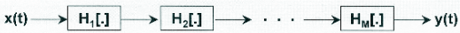
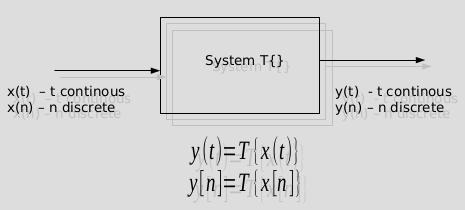

Sistemas e suas classes#
Sistemas#
Introdução#
É um dispositivo que processa um sinal aplicado em sua entrada gerando um sinal de saída;
É um processo (ou conjunto de interconexões de operações) que resulta numa transformação de um sinal.
Admitindo \(H[.]\) um operador que denota a transformação então:
\begin{equation} y(t) = H[x(t)]\end{equation}
\begin{equation}x(t) \stackrel{H[.]}{\rightarrow} y(t) \end{equation}
\(x(t)\): sinal de entrada e \(y(t)\): sinal de saída
Sistemas - Diagrama de blocos#
Conexão série

Conexão paralela
Sistemas - Interconexões combinadas#
Diagrama de Blocos
Sistemas - Exemplo#
Circuito RC paralelo alimentado por uma fonte de corrente.
\( i(t) = i_1(t)+i_2(t)\rightarrow i_1(t) = i(t)-i_2(t)\)
\( v(t) = \frac{1}{C} \int_{-\infty}^{t}i_1(t)dt \)
\( i_2(t) = \frac{v(t)}{R} \)
Modelo em diagrama de blocos:
Conhecer as partes \(\to\) conhecer o comportamento do sistema todo / podemos dizer qual a resposta de saída para qualquer entrada#
Será que podemos fazer o mesmo sem conhecer as partes que o constitui?#
Modelo caixa preta (Black box model)#

Como entender a resposta de um sistema?#
Entenda o comportamento de pequenas partes e como vinculá-las.
Circuitos elétricos: elementos como resistor, capacitor, indutor, fontes controladas, e etc, associados com o uso das leis de Kirchhoff’s para circuitos.
Circuitos mecânicos: elementos como massa, mola e etc, associados com o uso das leis de Newton.
Se o sistema é desconhecido, como determinar sua resposta para uma entrada geral x(t)?
Vá para o laboratório e faça vários experimentos.
Classes de sistemas#
O sistema é linear?#
O sistema é estável?#
O sistema é invariante no tempo?#
O sistema é causal?#
Classes de sistemas#
Descrição Qualitativa das Classes#
Estabilidade#
A estabilidade é um dos principais conceitos ligados a projeto de sistemas.
Existem diversos conceitos de estabilidade. No nosso caso será tratado apenas do BIBO - bounded input bounded output.
Esse conceito BIBO esta ligado a um sistema ser capaz de gerar uma saída limitada para uma entrada limitada.
Exemplo:
A ideia geral é que se o sinal de entrada esteja limitado entre \([-X_M, X_M]\) então a saída estaja limitada entre \([-Y_M, Y_M]\)#
from IPython.display import YouTubeVideo
YouTubeVideo('0c_TOfVG2As', width=600, height=300)
Caso a saída do sistema cresça sem limite isso pode levar a destruição do sistema#
from IPython.display import YouTubeVideo
YouTubeVideo('XggxeuFDaDU', width=600, height=300)
Invariância no tempo#
Linearidade#
Considere a seguinte situação
from IPython.display import YouTubeVideo
YouTubeVideo('7bkZbqcXRIA', width=600, height=300)
YouTubeVideo('E6ciuhaXc_4', width=600, height=300)
A linearidade compreende dois comportamentos: a escala e a sobreposição#
Causalidade#
Observe este trecho de programa:
entrada x(n)
saída y(n)
for i=1:N
y(i)=(x(i-1)+x(i)+x(i+1))/3
end-for
O que faz esse programa?
Causalidade#
Observe que a saída y(i) depende:
do passado da entrada: x(i-1) (é preciso de memória).
do futuro da entrada: x(i+1)
Se for considerado que i é o instânte presente, o nosso sistema precisaria de entradas futuras para saber como é o presente. O sistema seria antecipativo.
Sistema com e sem memória#
A saída depende da entrada somente para o instante atual.
O resistor é um sistema sem memória: \(v(t) = Ri(t)\)
O capacitor é um sistema com memória: \(v(t) = \frac{1}{C}\int_{-\infty}^{t}i(t)dt\)
\(y(t) = T\{x(t)\} = x²(t)\) ou \(y[n] = T\{x[n]²\}\)
\(y(t) = T\{x(t)\} = x(t) + x(t-1)\) ou \(y(t) = T\{x(t)\} = \int_{T_0}^{T_1}x(t)dt\),
\(y[n] = T\{x[n]\} = x[n] + x[n-1]\) ou \(y[n] = T\{x[n]\} = \sum_{n=N_0}^{N_1}x[n\)
Descrição ‘mais formal’ das classes#
Sistema causal#
Definição#
Um sistema é causal quando a sua saída, em qualquer instante de tempo \((t)\) ou amostra \((n)\), depende somente do valor presente ou dos valores passados do sinal de entrada.#
Se definir um \(t_0\) da saída, \(y(t_0) = T\{x(t)\}\), tem-se que os valor de \(x(t)\) usados são apenas \(t \leq t_0\)#
- Sistema causal: \(y(t) = x(t) + x(t-1)\) ou \(y[n] = x[n] + x[n-1]\)#
- Sistema causal: \(y(t) = \int_{-\infty}^{t}x(\tau)d\tau\)#
- Sistema não-causal: \(y(t) = x(t) + x(t+1)\) ou \(y[n] = x[n] + x[n+1]\)#
Sistema causal \(\rightarrow\) sistema não-antecipativo
Sistema antecipativo \(\rightarrow\) sistema não-causal
Sistema estável#
Definição#
Um sistema é estável no sentido BIBO (bounded input bounded output) se para toda entrada limitada a saída também é limitada.
Sistema Invariante no Tempo#
Definição#
Um sistema é invariante no tempo se um deslocamento no sinal de entrada produzir o mesmo deslocamento no sinal de saída.
Sistema Linear#
Definição#
**satisfaz o princípio da superposição;
**satisfaz a condição de escala.
Admitindo que \(y_i(t) = H[x_i(t)]\) e \(a_i\) são constantes quaisquer, o sistema é linear se: